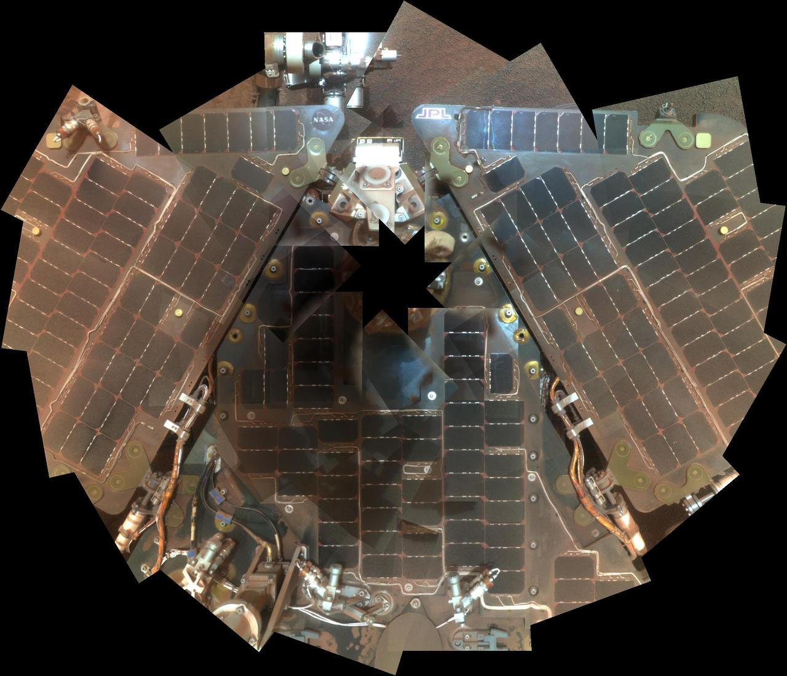
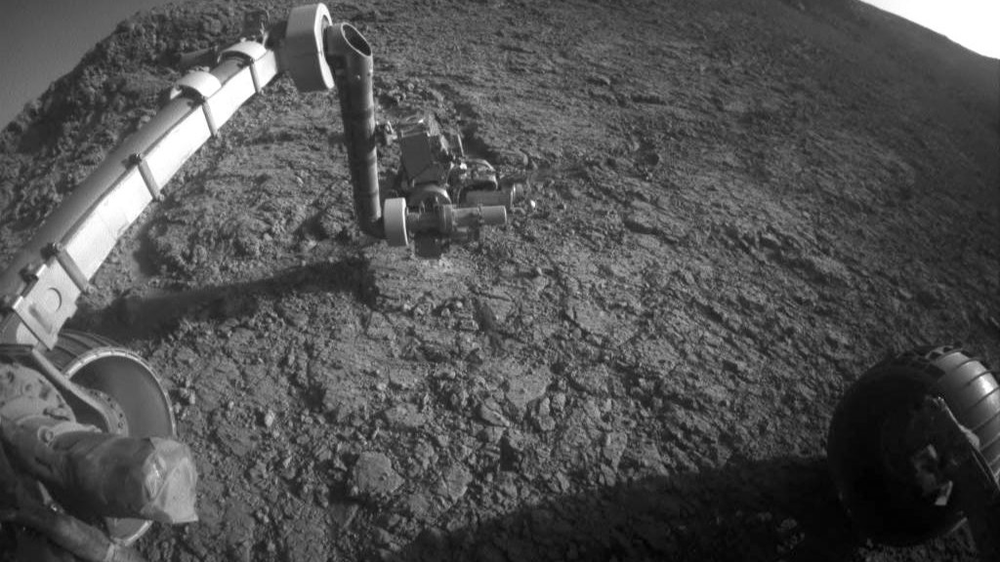

Opportunity was a robotic rover sent by NASA to explore Mars as part of the Mars Exploration Rover mission. It landed on Mars on January 24, 2004. Its main goal was to search for evidence that liquid water had once existed on the planet. Although designed for a short mission, Opportunity continued exploring Mars for more than 14 years.
Opportunity explored a region of Mars called Meridiani Planum. This area was selected because scientists found evidence of minerals that could have formed in the presence of water. The rover used cameras and scientific instruments to examine rocks and soil, study their composition and search for geological evidence of ancient water.
Opportunity discovered geological evidence that Mars once had liquid water on its surface. It studied unusual small, round formations called "blueberries", which were rich in the mineral hematite. The rover also examined layered rocks and minerals that helped scientists understand the planet's ancient environment and geological history.
These discoveries provided important evidence that liquid water had existed on ancient Mars. Opportunity helped scientists better understand the planet's past environmental conditions.
Opportunity was originally designed for a mission lasting just 90 Martian days (sols), but it continued exploring for more than 14 years and travelled approximately 45.16 kilometres across Mars. In 2018, a massive dust storm blanketed Opportunity's location and blocked sunlight from reaching its solar panels. The rover sent its final communication on June 10, 2018. After repeated attempts to contact it, NASA officially declared the mission complete on February 13, 2019.
Opportunity remains on the surface of Mars today. Although its mission has ended, the rover's discoveries continue to help scientists understand the history of the Red Planet.

NASA's Opportunity rover examines a Martian rock target called "Private John Potts" in Marathon Valley. The rover used its Rock Abrasion Tool to remove the rock's outer surface and its Alpha Particle X-ray Spectrometer (APXS) to identify the chemical elements present in the rock.
Image Credit: NASA/JPL-Caltech | NASA Image Source (PIA20285)
NASA's Opportunity rover captured this self-portrait in 2007 after a Martian dust storm. The rover team used the image to examine how much dust had accumulated on its solar panels, which affected the amount of sunlight available to generate power.
Image Credit: NASA/JPL-Caltech/Cornell | NASA Image Source (PIA15114)